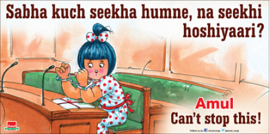
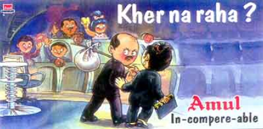
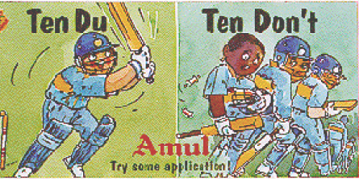
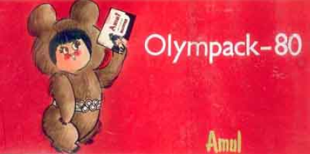
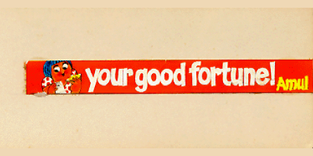
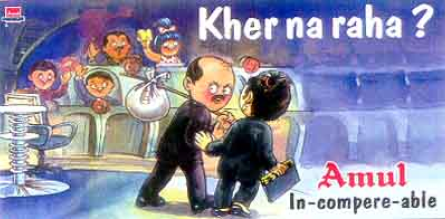
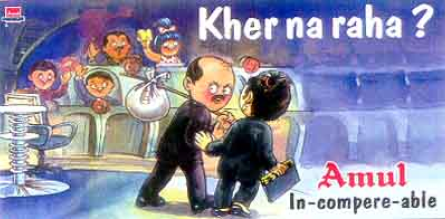
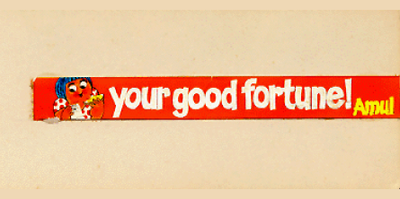
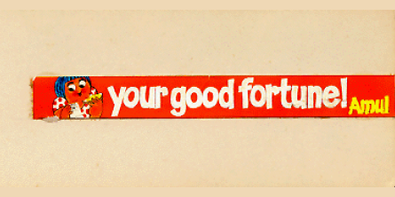

Wondering what the title is trying to say? It is my failed attempt to try what Amul ads have been doing so seamlessly since last 50 years - touching our
hearts and making us smile with their crisp and witty taglines and eye candy visuals. Amul Topicals have been the longest running outdoor advertisement campaigne
in the world and holds a Guinness world records.
So how did it all began?
Amul topicals featuring the adorable utterly butterly girl was an idea conceived in 1966 by Sylvester deCunha
and Eustace Fernandez when Verghese Kurien, the milk-man of India approached them for advertising for Amul Butter.
Since then the Amul Girl has warmed our hearts, making us smile for so many years and has been a reflection of the mood
of the mood of the country.
In the words of Da Cunha, “Eustace Fernandez (art director) and I decided that we needed a girl who would worm her way into a housewife’s heart. And who better than a little girl?”
What makes Amul's ad game so strong?
It's contextual relevance. Amul ads are extremely contextual. They respond and infact mirror the mood the nation, whether its of fear or celebration. Being highly relevant & contexual, Amul ads are short lived, with initially topicals being hand painted on bill boards, there were roughlt 10-12 topicals in an year, but with the changing technology in print media and digital platforms, today the ads have a very strong topical undertone with 2-3 visuals being released every week.
Amul ads are so contextual that when I see the ads of the 1980s, before I was born, I could not relate to the ads nor could I understand the context. Do you relate to these ads from early days?
At one go it might look like that Amul ads have been timeless, but the fact is that they have constantly evolved over time to keep up with ‘The taste of India!’. They have also managed to mantain visual and literal relevance with changing aesthetic preferences and the trending Hinglish jargons.
The visualization below shows how the advs have been keeping up with the visual preferences of Indians. With more saturated graphics in the initial years to subtler choice of colours, Rahul de Cunha and team have made sure all the ads are a treat to the eyes whether they adorn the billboards or meet us on social media.
Kindly wait for the visualization to load, hover over coloured tiles to see the ads
The grid compiles the 10 most popular ads of every 5 years and the most dominant colour has been extracted from these ads to derive the colours used in these advs. It can be seen that initially the colours used were
more vivid and saturated, over the years the colours used have become less saturated to suit the changing tastes of the Indian masses.
2020
2015

2010
2005
2000

1995

1990
1986
1981

1976

What makes Amul ads so likeable??
Amul ads have not only touched our hearts but also our minds. The unbeatable combination of beautiful and adorable visuals with the even more interesting word play makes these ads so popular.
Diggin a little more in detail, Amul ads have been studied considering the language used, the elocutionary forces in actions the punning techniques adopted in the legendary ad campaigne.
The Social Spectator
Over these last 50 years, these ads have been cheeky and amusing, capturing not just the news of the moment but also the mood – cricket and Bollywood have been particular favourites. They can be slyly political too, even to the point of being critical – in 1976, during the Emergency, an large hoarding showed the Amul girl dressed in a nurse’s uniform, holding a tray with a packet of butter and licking her lips, with the caption, “We’ve always practiced Compulsory Sterilisation.” It was a clear comment on the family planning sterilisation programme being pushed by Sanjay Gandhi.
Amul ads over last 70 years have covered all landmark events in the history of the nation. It will not be
wrong to say that Amul ads can speak of India's history, so here is an attempt to bring to you "History through Amul ads"


 



 
